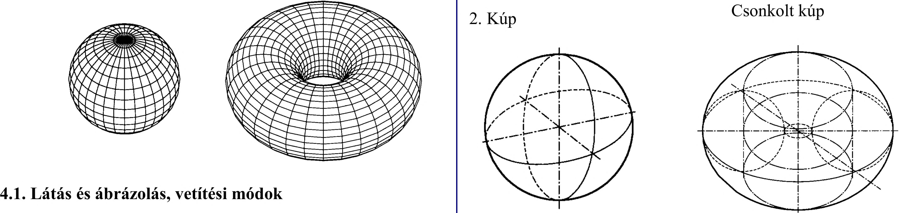

3. Vetületi ábrázolás A görbe felületű testek (64. ábra) közül csak a forgástestekkel foglalkozunk, ide tartozik: - henger, - kúp, - gömb, - körgyűrüfelület. 1 . Henger A külső világ tárgyainak képét a szemünkbe érkező fénysugarak hozzák létre. A látás alkalmával keletkező képet centrális képnek nevezzük (65. ábra). Az ilyen vetítés esetén a szem a vetítési középpont vagy centrum , a tárgy pontjainak látósugarai a vetítő sugarak, a képalkotási eljárás pedig a centrális vagy középponti vetítés. A centrális vagy középponti vetítéssel keletkező kép nem azonos nagyságú a tárggyal, mivel a kép nagysága a tárgy helyzetétől függ. így a képsíkhoz közelebbi tárgy vagy méret kisebbnek, a képsíktól távolabb lévő pedig nagyobbnak látszik. Ezért a centrális vetítési mód nem alkalmas a műszaki rajzok készítésére. Paralel vagy párhuzamos vetítés esetén a vetítési középpont a végtelenben van, ezért az onnan jövő fénysugarak (vetítősugarak) párhuzamosnak tekinthetők. Az így keletkező kép független a képsík és a tárgy távolságától, és a tárgy, valamint a képsík speciális helyzetében a testet határoló síkidomok alak- és mérethelyes megmutatására alkalmas (66. ábra). A képsíkra vetített képet vetületnek nevezzük. Attól függően, hogy a vetítősugarak iránya a képsíkhoz viszonyítva merőleges vagy ferde, a vetítés merőleges (ortogonális), ill. ferdeszögű (klinogonális) lehet. 3.2. Merőleges vetítés Merőleges párhuzamos vetítés esetén az egymással párhuzamos vetítősugarak a képsíkra merőlegesek. A merőleges vetítés a képsíkkal párhuzamos síkidom képét alak- és mérethelyesen viszi át a képsíkra. 3. Gömb 4- Körgyürüfelület 64. ábra 65. ábra K képnagyság T tárgynagyság K^T 66. ábra K képnagyság T tárgynagyság K = T 17
